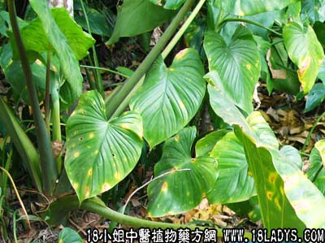

别名：天策菜、簕藕。
植物名：刺芋。
生长环境：本品为粗壮、有刺草本，生于山谷阴湿地方。
分布：印度、婆罗洲和我国南部。
入药部分：根。
采集期：全年。
自采地点：涌边、海滩边。
性味：性凉、味淡。
功能：清热解毒。
主治、用量和用法：1、天泡疮：用干根适量，煎水外洗；2、痰火核：用干根5钱至1两，猪瘦肉适量，清水煎服。
（方歌）痰火结核天泡疮，簕茨菇根好帮忙，或服或洗依法制，清热解毒保平安。
参考资料：《广东中医选集第一集》广州中医学院介绍治颈淋巴结核验方：簕茨菇5钱、老鼠簕5钱、风栗壳5钱、浙贝母5钱、罗汉果一个、千层纸3钱、夏枯草3钱、白花鬼灯笼5钱，共服三十天为一疗程，有消结散肿之效。